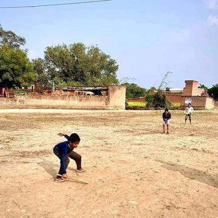
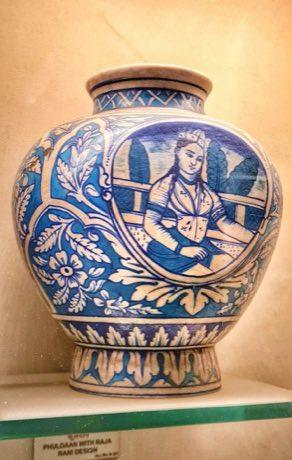
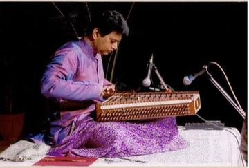

Deep Past and First Games 1

Pallanguzhi
India · Board and table games
River Valleys and First Cities 3

Kushti / Pehlwani mud wrestling
India +1 · Wrestling and martial sportsPlay preview · in the Sports & Skill of the World app
Classical Worlds 4

Bansuri bamboo flute
India +1 · Musical instrumentsPlay preview · in the Music & Dance of the World app
Kathputli string puppets
India · Performance and storytellingPlay preview · in the Story & Theatre of the World app
Crossroads and Golden Ages 5


Veena
India · Musical instrumentsLambs and Tigers
India · Board and table games
Age of Contact and Craft 6


Letter Categories
Germany +3 · Racing

Shikara paddle race
India · Racing
Modern Heritage 14





Living Traditions 21

Bandhani tie-dye
India · Crafts and making
Blacksmith's Forge
United Kingdom +4 · Crafts and making

Chamba rumal embroidery
India · Crafts and making
Dhol drum rhythm
India · Musical instruments
Jaapi weaving
India · Crafts and making
Jaipur blue pottery painting
India · Crafts and making
Kashmiri papier-mache painting
India · Crafts and making
Kathak tatkar footwork rhythm
India +1 · Other traditions
Lippan kaam mud-and-mirror relief
India +1 · Crafts and makingPlay preview · in the Paper & Paint of the World app
Mehndi henna pattern drawing
India +1 · Crafts and makingPlay preview · in the Paper & Paint of the World app
Mithila folk painting
Nepal +1 · Crafts and making
Pakistani truck art
Pakistan +1 · Crafts and makingPlay preview · in the Paper & Paint of the World app
Phulkari darn-stitch embroidery
India +1 · Crafts and makingPlay preview · in the Textile Crafts of the World app
Ralli patchwork quilt
Pakistan +1 · Crafts and making

Santur Hammer Strings
Iran +3 · Musical instruments